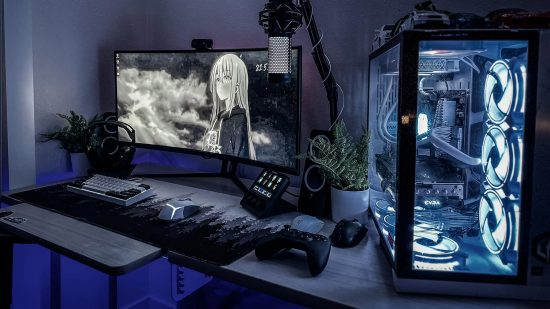
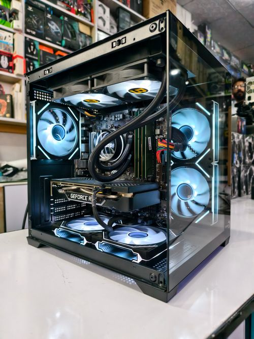

Processador
O cérebro que executa as tarefas.
Uma página visual para entender peças, comparar caminhos e transformar a ideia de um computador em um projeto real.

O mapa da máquina
A melhor montagem começa entendendo o papel de cada componente, não apenas escolhendo o mais caro.
O cérebro que executa as tarefas.
Responsável pelos gráficos e jogos.
Agilidade para trabalhar com várias coisas.
Onde seus arquivos e sistema vivem.
Energia estável para todo o conjunto.
Proteção, espaço e circulação de ar.
Escolha um ponto de partida
Selecione um perfil para visualizar uma sugestão de equilíbrio entre desempenho e propósito.
Um ponto de partida equilibrado para tarefas do dia a dia e projetos escolares.

Notas rápidas
Processador, placa-mãe e memória precisam conversar entre si. Verifique o soquete e a geração antes de comparar preços.
Uma fonte de qualidade protege o restante do computador e ajuda a manter o sistema estável.
Uma boa montagem também considera upgrades futuros, como mais armazenamento ou memória.
Projeto educacional
Use este site como laboratório. Troque os textos, adicione peças, crie seu próprio perfil e aprenda construindo.
Ver conteúdo no YouTube ↗